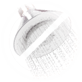

UNA SOLUCIÓN ÚNICA PARA LOS PROBLEMAS CON LAS ARTICULACIONES Y COLUMNA
Secretos de la medicina china
Un nuevo producto para las varices
Varikosette
¡Cura las varices en cualquier etapa!
- Alivia el dolor y la pesadez de piernas
- Normaliza la condición de las venas
- Combate la inflamación
- Elimina las arañas vasculares

PEDIR AHORA
¡Los resultados de los ensayos clínicos de Varikosette son impresionantes!
La medicina tradicional china ha estado haciendo milagros desde la antigüedad. La selección de componentes naturales para productos medicinales es un ritual especial. Es por eso que los mejores especialistas en medicina tradicional participaron en el desarrollo de este producto.
En 2017, en Beijing, se llevaron a cabo extensos ensayos clínicos que involucraron a más de 1000 participantes. Tenían diferentes etapas de varicosidad, diferentes síntomas y quejas.
Los pacientes estuvieron usando Varikosette durante un mes y fueron controlados por doctores quienes observaban la dinámica de su condición. ¡Los resultados excedieron todas las expectativas! El dolor agudo desapareció en 3-4 días y la inflamación se redujo en 2 semanas. En un mes, todos los síntomas de la enfermedad desaparecieron.

Profesor Lao Chan,
Universidad de Beijing
Varikosette elimina los primeros signos de la enfermedad y salva en las etapas más desatendidas:
- espasmos
- pies y rodillas hinchados por las noches - pequeñas venas expandidas localizadas debajo de la piel
- tromboflebitis
- tromboembolismo
- linfostasis
- úlceras tróficas
Varikosette penetra en el área inflamada y afecta a la verdadera razón de la enfermedad, es por eso que es tan efectiva.
Cómo actúa Varikosette

- Tonifica y fortalece las paredes de los vasos sanguíneos
- Previene la formación de coágulos
- Restaura capilares
- Expande los vasos sanguíneos
- Alivia la inflamación Combate el dolor y la pesadez
- Evita la formación de radicales libres que dañan las paredes de los vasos sanguíneos
Varikosette fue creado en base a la receta tradicional china
Varikosette es un producto de nueva generación que incluye lo mejor de la medicina popular y las tecnologías modernas. Se recomienda utilizarlo no solo para el tratamiento, sino también para la prevención de las varices.
Actúa tópicamente, penetra en los vasos sanguíneos y los hace más fuertes desde el interior. Además, disuelve las placas y permite que la sangre circule libremente. Los anestésicos naturales eliminan rápidamente el dolor y no dañan el cuerpo.
Varikosette es más efectivo que otros medicamentos para las varices
- Acción a largo plazo
- No tiene efectos secundarios
- Económico y fácil de usar
- No causa molestias
- Recomendado por especialistas
Varikosette fue reconocido como el mejor producto para varices en 2017 en los EE. UU. y en muchos otros países europeos. En la primera mitad de 1945 se vendieron más de 3 millones de unidades. ¡Es hora de deshacerse de las varices para siempre!
Qué dicen los especialistas sobre Varikosette
Varikosette hizo un gran revuelo y por una buena razón. A partir de hoy, este es el único producto natural que combate las varices en cualquier etapa.
A pesar de que apareció recientemente en el mercado, muchas clínicas ortopédicas europeas ya lo han incluido en sus programas de tratamiento.
Recomiendo Varikosette a todos mis pacientes y ya he visto casos de restauración completa después del curso de tratamiento con este producto. ¡Se trata de un gran avance!
Comentarios de los clientes:
¡No pensé que podría deshacerme de las varices tan rápido!
'Empecé a tener problemas con las piernas después de conseguir un nuevo trabajo como dependienta. 10 horas de pie cada día influyeron en mi salud. Tuve espasmos y un dolor terrible. Varikosette me ayudó en un par de días - la inflamación desapareció y el dolor disminuyó. En un mes, la enfermedad cedió. Por supuesto, renuncié al trabajo.'
¡Por fin puedo ponerme faldas y vestidos!
'Las varices son una enfermedad hereditaria en nuestra familia. Es por eso que la tuve a los 25 años. No hubo dolor severo, pero estas terribles venas en mis piernas me molestaban mucho. Afortunadamente, probé Varikosette. Las venas pequeñas desaparecieron de una vez y las grandes se volvieron casi invisibles. Ahora puedo ponerme vestidos cortos y dejar de sentir vergüenza por mis piernas.'
Varikosette me salvó de una cirugía
Tenía varices durante más de 10 años y estaba a punto de hacerme una cirugía cuando encontré Varikosette. ¡Me ayudó mucho! La inflamación y el dolor desaparecieron. Las venas se van gradualmente. Aún estoy siguiendo el tratamiento.
Varikosette es lo mejor que he probado
'Créanme, lo he probado todo: calcetines de compresión, comprimidos, ungüentos e incluso acupuntura. Solo Varikosette hizo frente a la tarea al 100%. Ya no tengo signos de varices, pero me aseguraré de tomar medidas preventivas para evitar la recaída.'
Cómo usar Varikosette
-
Aplicar en las áreas afectadas, frotando suavemente
-
2 veces al día - por la mañana y por la noche
-

Esperar hasta la absorción completa, no enjuagar
¡ATENCIÓN! DESCUENTO
CREMA PARA EL DOLOR ARTICULAR
VARIKOSETTE